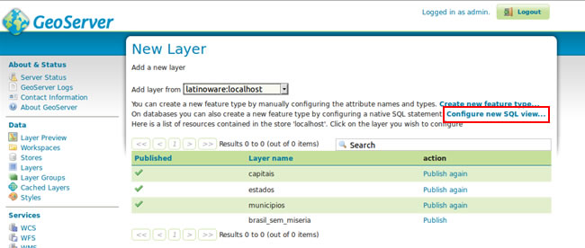
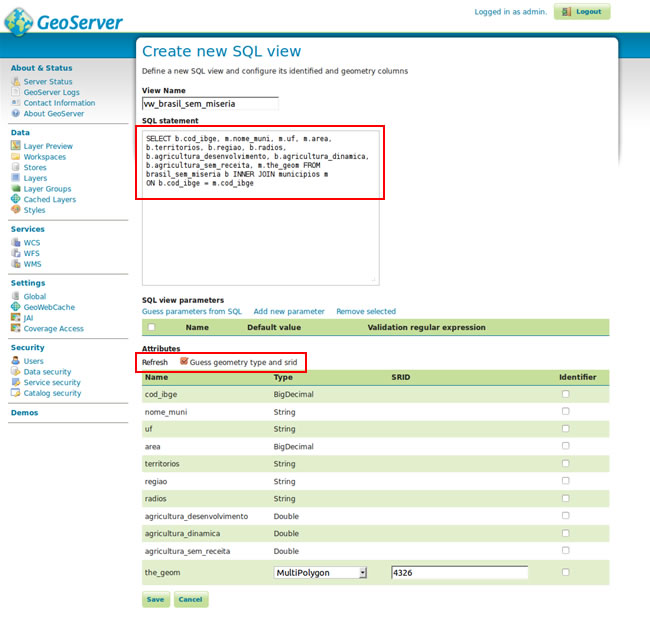
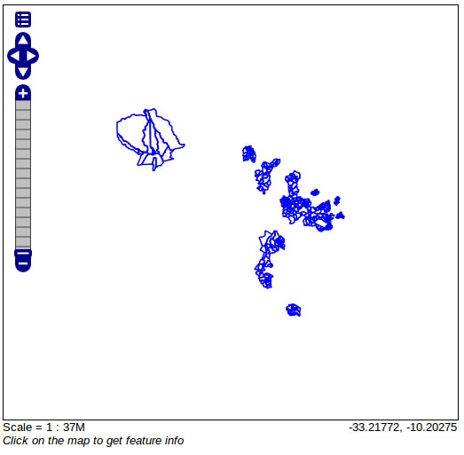

No campo SQL statement, adicionaremos o script abaixo:
SELECT b.cod_ibge, m.nome_muni, m.uf, m.area, b.territorios, b.regiao, b.radios, b.agricultura_desenvolvimento, b.agricultura_dinamica, b.agricultura_sem_receita, m.the_geom
FROM brasil_sem_miseria b
INNER JOIN municipios m
ON b.cod_ibge = m.cod_ibge
No campo Attributes, deixaremos marcado o campo Guess geometry type and srid e clicaremos em Refresh. A imagem deve ficar como a exibida abaixo
Formulário da SQL View
Camada do Brasil sem Miśeria no Openlayers